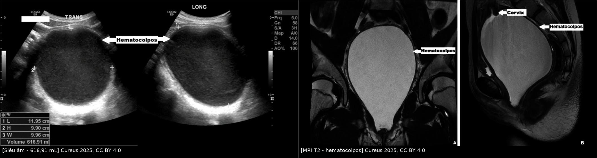
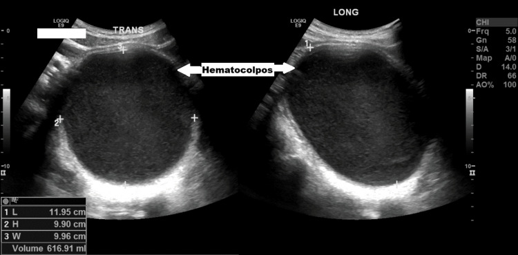
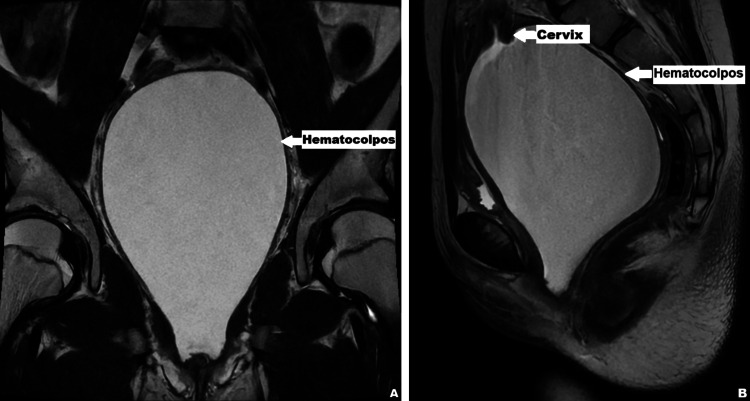
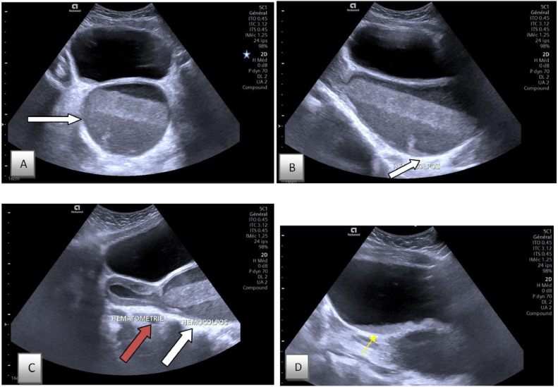

1744 — Bí tiểu cấp ở bé gái: khối chèn ép cổ bàng quang – niệu đạo / Acute urinary retention in girls
Tags: pattern:bi-tieu pattern:khong-hoi-am pattern:u-mau-am-dao pattern:chen-ep vung:am-dao vung:bang-quang vung:tieu-khung vung:co-tu-cung anatomy:tieu-khung-nu protocol:SA-tieu-khung protocol:MRI-tieu-khung
Mức chắc chắn (certainty): tổng hợp y văn (literature synthesis) — định nghĩa và dịch tễ từ đoàn hệ 56 đợt bí tiểu cấp nhi (PMC11883049) và loạt 17 bệnh nhi hydrometrocolpos (PMC13614824); hình ảnh là ca nguyên văn có số đo (617 mL — PMC12665289; 500 mL — PMC11378082; 700 mL — PMC13165485). Không có RCT cho nhóm bệnh này; các khuyến cáo là đồng thuận thực hành.
1. Tổng quan bệnh học – cơ chế hình ảnh
- Định nghĩa bí tiểu cấp (acute urinary retention, AUR) ở trẻ: không thể làm rỗng bàng quang theo ý muốn quá 12 giờ, với thể tích nước tiểu lớn hơn dung tích kỳ vọng theo tuổi = (tuổi + 2) × 30 mL, hoặc sờ thấy bàng quang căng (PMC11883049). Đây là định nghĩa dùng được ở cấp cứu vì không cần siêu âm trước khi đặt sonde.
- Dịch tễ — vì sao phải nhớ: AUR nhi khoa 30,2/100.000 lượt khám cấp cứu nhi, trong đó chỉ 33% là bé gái — nghĩa là ở bé gái, AUR hiếm nhưng mỗi ca đều phải giải thích được bằng một nguyên nhân cơ học hoặc thần kinh, không được quy cho "nhiễm trùng niệu" rồi cho về (PMC11259769). Trong 56 đợt AUR nhi (PMC11883049): sau mổ 23%, thuốc 13%, nhiễm trùng niệu 11%, hẹp bao quy đầu/viêm quy đầu 11% (chỉ gặp ở bé trai), táo bón 11%, ung thư 9%, không rõ 18%; đặt sonde niệu đạo thành công 92%, tự hết 16%.
- Vì sao khối trong tiểu khung chèn được đường tiểu: niệu đạo nữ ngắn (≈ 4 cm) và tựa lên thành trước âm đạo; bàng quang nằm ngay sau khớp mu, đáy bàng quang áp lên vòm âm đạo. Khi âm đạo căng đầy máu/dịch, khối nâng và đẩy cổ bàng quang ra trước – lên trên, đồng thời gập góc niệu đạo; tam giác bàng quang bị kéo căng nên detrusor không thể co thắng lực cản → nước tiểu ứ, bàng quang căng đau. Vì vậy bé vẫn có thể rỉ nước tiểu (overflow incontinence) chứ không phải vô niệu — đây là lý do hay bị đánh giá nhẹ.
- Vì sao ứ nước thận đi kèm: áp lực trong bàng quang cao truyền ngược lên đoạn niệu quản trong thành, làm hở van một chiều và ứ nước – ứ niệu quản hai bên. Trong loạt 17 bệnh nhi hydrometrocolpos, 17/17 có ứ nước thận – niệu quản do chèn ép đường niệu dưới (PMC13614824) → siêu âm thận là phần bắt buộc của protocol, không phải "làm thêm".
- Vì sao hình ảnh phân biệt được "máu ứ" với "nang/dịch":
- Siêu âm: khối hình con nhộng, đường giữa, sau bàng quang; máu ứ cho echo bên trong mức thấp – vừa ("fish-net"/reticular) do hồng cầu lắng và fibrin, khác nang đơn thuần trong kính, không echo. Đo 3 đường kính và thể tích (máy tự tính) — ca dưới đây 11,95 × 9,90 × 9,96 cm = 616,91 mL.
- MRI: máu ứ T1 sáng (methemoglobin), T2 tùy tuổi máu (cấp: tối; bán cấp muộn: sáng); không ngấm thuốc ở phần dịch (chỉ thành ngấm) → loại khối đặc; DWI không hạn chế thật trừ khi ứ mủ (pyocolpos → ADC thấp, gặp khi có sốt).
- CT: máu ứ ≈ 30–60 HU, cao hơn nước tiểu 0–10 HU, nhưng không dùng đầu tay ở trẻ vì liều — chỉ khi nghi u đặc/chấn thương.
- Con số phải nhớ: màng trinh kín 1/1.000 – 1/10.000 trẻ gái, và ≈ 50% trong số đó có bí tiểu (PMC11378082). Hydrometrocolpos 1/16.000 trẻ gái sinh sống (PMC13614824). Thể tích ứ thường 500–700 mL ở tuổi dậy thì (500 mL — PMC11378082; 617 mL — PMC12665289; 700 mL — PMC13165485) — đủ để giải thích cả chèn ép niệu đạo và ứ nước thận.
- Sau khi giải áp: nước tiểu có thể thoát rất nhiều (post-obstructive diuresis) do giãn bể thận và mất cân bằng Na–nước; ngưỡng thực hành là > 2 mL/kg/giờ kéo dài ≥ 2 giờ → phải bù dịch theo lượng nước tiểu và xét nghiệm điện giải – creatinin, không truyền dịch mù.
2. Mẫu hình + chẩn đoán phân biệt theo vị trí (gamut)
- Mẫu hình chung: bé gái đau bụng dưới cấp, bàng quang căng sờ thấy, không đi tiểu được (hoặc rỉ liên tục), có thể đau quặn theo chu kỳ và vô kinh nguyên phát nếu nguyên nhân là tắc đường sinh dục.
- Gamut theo TẦNG giảm áp (nhớ "Â – B – N – C"), kèm nhóm KHÔNG do tắc:
- Âm đạo (hay gặp nhất ở tuổi dậy thì):
- Màng trinh kín → ứ máu âm đạo (hematocolpos): màng phồng xanh tím ở tiền đình khi rặn, khối sau bàng quang; có thể kèm ứ máu buồng tử cung (hematometra). Chiếm phần lớn AUR do nguyên nhân phụ khoa.
- Vách ngang âm đạo, bất sản/hẹp cổ tử cung → ứ máu tầng trên.
- OHVIRA (Herlyn–Werner–Wunderlich): tử cung hai sừng – hai cổ + một nửa âm đạo tắc + bất sản thận cùng bên; khối một bên, bên kia vẫn hành kinh (chi tiết: bài 1671).
- Hydrocolpos ở sơ sinh (ứ dịch do estrogen mẹ) và u cơ vân thể chùm nho (botryoides) ở trẻ nhỏ — khối nhiều thùy sa ra âm hộ, chảy máu/dịch.
- Buồng trứng: xoắn buồng trứng (đau cấp + nôn; khối chèn ít khi gây bí tiểu nhưng nang lớn > 5–10 cm có thể đẩy bàng quang), nang/khối buồng trứng lớn.
- Niệu đạo – bàng quang: nang tuyến Skene/paraurethral (khối cạnh lỗ niệu đạo, hay gặp ở sơ sinh), sa niệu đạo (viền đỏ tím quanh lỗ niệu đạo, chảy máu), sỏi niệu đạo, túi thừa bàng quang, ureterocele sa ra lỗ niệu đạo (khối tròn, có thể gây bí tiểu từng cơn).
- Cùng cụt – vùng chậu sau: u quái cùng cụt (khối mông – cùng cụt, có thể trước cùng cụt), thoát vị màng não trước cùng cụt (khối nang sau trực tràng, cấm chọc), áp-xe vùng chậu, khối bạch huyết (lymphangioma).
- Không do tắc (phải loại trước khi mổ): táo bón/ứ phân (nguyên nhân 11% trong đoàn hệ), nhiễm trùng niệu – viêm âm hộ, thuốc kháng cholinergic/opioid, rối loạn đi tiểu không thần kinh (dysfunctional voiding), bệnh tủy – đuôi ngựa/tủy quấn (tethered cord), viêm tủy ngang, hội chứng Fowler ở bé lớn.
- Âm đạo (hay gặp nhất ở tuổi dậy thì):
3. Bảng so sánh phân biệt (ma trận đối chiếu)
| Thực thể (entity) | Hình ảnh điển hình | Chốt vào (rule-in) | Chốt loại (rule-out) | Gợi ý xác nhận |
|---|---|---|---|---|
| Màng trinh kín / ứ máu âm đạo | Khối con nhộng đường giữa sau bàng quang, echo trong mức thấp; MRI T1 sáng; không ngấm thuốc | Màng phồng xanh tím ở tiền đình + vô kinh nguyên phát + đau chu kỳ; thể tích ứ 500–700 mL | Có lỗ màng trinh thấy được và không ứ máu → không phải; khối đặc/ngấm thuốc → nghĩ u | Khám tiền đình bắt buộc; US 3 đường kính; MRI khi cần phân tầng |
| OHVIRA (nửa âm đạo tắc) | Hai sừng tử cung, hai cổ, một nửa âm đạo căng máu một bên; không thấy thận cùng bên | Bộ ba didelphys + hemivagina tắc + bất sản thận cùng bên trên MRI | Hai thận bình thường + không có nửa âm đạo tắc → loại | MRI tiểu khung bắt buộc; US đơn thuần bỏ sót thận mất |
| Vách ngang âm đạo / hẹp cổ tử cung | Ứ máu âm đạo trên ± buồng tử cung, âm đạo dưới xẹp | Vô kinh + khối giữa + không thấy cổ tử cung bình thường | Màng trinh kín (khối sát tiền đình, màng mỏng) → loại bằng khám | MRI để đo độ dày vách và khoảng cách tới cổ tử cung |
| Xoắn buồng trứng | Buồng trứng to, phù, nang > 5 cm, dòng chảy Doppler giảm/mất, dịch quanh | Đau cấp + nôn + không dòng chảy | Có dòng chảy rõ + không đau cấp → ít nghĩ xoắn | Doppler màu và đen trắng; mổ nội soi khi còn nghi |
| Nang Skene / sa niệu đạo | Khối cạnh lỗ niệu đạo (Skene) hoặc viền niêm mạc tím lòi ra (sa niệu đạo) | Khối khu trú ngay lỗ niệu đạo, không phải khối âm đạo | Khối ở vòm âm đạo/sau bàng quang → không phải Skene | Khám tư thế sản khoa; US đầu dò nhỏ |
| U quái cùng cụt | Khối cùng cụt – mông, đặc/nang hỗn hợp, có thể vôi hóa; đẩy trực tràng – bàng quang | Khối vùng cùng cụt + AFP tăng (thể chưa trưởng thành) | Khối hoàn toàn trong tiểu khung, không liên tục với cùng cụt → loại | MRI chậu – cùng cụt; AFP; không chọc |
| Táo bón / ứ phân | Trực tràng giãn chứa phân, đẩy bàng quang ra trước | Bí tiểu + bón kéo dài, hết sau tháo phân | Vẫn bí tiểu sau khi tháo sạch phân → phải tìm nguyên nhân khác | X-quang bụng/US; theo dõi lại sau 24–48 giờ |
| Rối loạn đi tiểu / nhiễm trùng niệu | Bàng quang căng nhưng không có khối chèn, thành dày; nước tiểu có bạch cầu/nitrit | Không khối + đáp ứng kháng sinh/điều trị hành vi | Có khối sau bàng quang → không được dừng ở chẩn đoán này | Cấy nước tiểu; US sau khi đặt sonde; niệu động học nếu tái diễn |

*Trái: siêu âm tiểu khung — khối echo trong 11,95 × 9,90 × 9,96 cm, 616,91 mL sau bàng quang. Phải: MRI T2 coronal/sagittal — âm đạo căng máu (hematocolpos), cổ tử cung bị đẩy lên. Nguồn: Cureus 2025 (PMC12665289), CC BY 4.0. Ảnh ghép letterbox, giữ nguyên tỷ lệ.*4. Protocol chụp + xử trí theo bậc
- Bước 0 — trước hình ảnh: hỏi chu kỳ kinh – vô kinh nguyên phát – đau quặn chu kỳ, thuốc, táo bón, chấn thương; khám tiền đình ở tư thế sản khoa (màng phồng xanh tím = chốt lâm sàng). Không đặt sonde mù khi thấy màng căng phồng — sonde không qua được và làm rách màng, mất dấu hiệu.
- Siêu âm tiểu khung (đầu tay, không bức xạ): đo 3 đường kính + thể tích khối, xác định trước/sau bàng quang, đo thành bàng quang, thể tích nước tiểu tồn dư, và bắt buộc khảo sát hai thận (ứ nước, niệu quản). Sau khi giải áp, siêu âm lại để chứng minh khối xẹp và thận giảm ứ.
- MRI tiểu khung (không cần cản quang trừ khi nghi u đặc): chỉ định khi siêu âm không phân loại được tầng tắc, nghi OHVIRA/dị dạng Müller, khối đặc, hoặc cần đo vách – khoảng cách tới cổ tử cung trước mổ. MRI là yếu tố giảm chẩn đoán nhầm trong OHVIRA (OR 0,157 — PMC12589279, xem bài 1671).
- Xét nghiệm: tổng phân tích nước tiểu + cấy, creatinin – điện giải, công thức máu (nhiễm trùng/ứ mủ), β-hCG chỉ khi cần (tuổi dậy thì, phân biệt thai).
- Giải áp: sonde niệu đạo là bước đầu, thành công 92% (PMC11883049); nếu thất bại → chọc hút trên mu (suprapubic) hoặc sonde trên mu. Ghi lại thể tích nước tiểu lần đầu (500 mL — PMC11378082) và theo dõi nước tiểu theo giờ.
- Xử trí nguyên nhân (không chỉ đặt sonde):
- Màng trinh kín: rạch hình chữ thập (cruciate hymenectomy) + cắt mô thừa, dẫn lưu ≈ 600–700 mL máu ứ; kháng sinh nếu ứ mủ.
- OHVIRA/vách ngang: cắt vách – mở thông qua nội soi âm đạo khi có thể; theo dõi tái hẹp.
- U quái cùng cụt / khối đặc: MRI + AFP, phối hợp ngoại nhi – ung thư.
- Táo bón: tháo phân rồi đánh giá lại — không kết luận "do táo bón" khi chưa loại khối.
- Flowchart xử trí:
flowchart TD A[Bé gái bí tiểu cấp] --> B[Khám tiền đình tư thế sản khoa] B -->|Màng phồng xanh tím| C[Siêu âm: khối sau bàng quang + hai thận] C --> D[Hematocolpos] D --> E[Rạch màng trinh chữ thập + dẫn lưu] B -->|Không thấy bất thường| F[Siêu âm bàng quang + hai thận] F -->|Khối chèn ép| G[MRI tiểu khung để phân tầng] F -->|Không khối| H[Loại tắc: nước tiểu, thuốc, táo bón, thần kinh] G --> I[OHVIRA hoặc vách ngang hoặc khối đặc] I --> J[Phẫu thuật theo hình thái + theo dõi tái hẹp] E --> K[Đo nước tiểu giờ + creatinin điện giải] J --> K H --> K
- Theo dõi sau giải áp: post-obstructive diuresis (> 2 mL/kg/giờ ≥ 2 giờ), hạ Na/K, creatinin; siêu âm thận lại sau 24–48 giờ; hẹn khám chu kỳ và tái hẹp sau mổ.
5. Biến thể bình thường và cạm bẫy
- Ứ dịch âm đạo ở sơ sinh (mucocolpos/hydrocolpos do estrogen mẹ): khối dịch nhỏ, tự thoái triển trong vài tuần — chỉ can thiệp khi chèn ép niệu quản/bí tiểu hoặc khối tăng dần. Đừng mổ vì "thấy dịch".
- Trào ngược âm đạo (vesicovaginal reflux/urocolpos): nước tiểu trào vào âm đạo khi đi tiểu, siêu âm thấy dịch âm đạo sau đi tiểu nhưng hết khi chụp lại sau khi đứng – đi tiểu lại; đây là biến thể chức năng, không phải ứ máu — phân biệt bằng echo và thời điểm chụp.
- Bàng quang căng giả "khối nang": nếu siêu âm trước khi đặt sonde, bàng quang căng có thể bị đọc là khối; đặt sonde rồi chụp lại phân biệt.
- Bẫy "hài lòng với chẩn đoán đầu": ca 12 tuổi (PMC11259769) được cho là bí tiểu do táo bón, tháo phân xong đi tiểu được và ra viện, 2 ngày sau quay lại với màng phồng xanh tím và ứ máu âm đạo. Táo bón là yếu tố thúc đẩy, không loại trừ khối chèn ép — phải hẹn khám lại và khám tiền đình.
- Khám sinh dục ngoài "bình thường" không loại trừ: ở ca đầu tiên, khám ngoài không ghi nhận bất thường, chẩn đoán chỉ đặt được khi nhìn kỹ tiền đình. Luôn kê mỏm – tách môi bé và mô tả màng, lỗ niệu đạo, cùng đồ.
- Đặt sonde đơn thuần không giải quyết nguyên nhân: bí tiểu tái phát sau rút sonde là dấu hiệu khối chưa được xử lý, không phải "bàng quang lười".
6. Tự lượng giá — Blind Quiz
Ca 1 — Bé gái 13 tuổi, bí tiểu 24 giờ, đau bụng dưới 2 tháng. Siêu âm tiểu khung:

- Gợi ý lâm sàng: chưa có kinh, đau âm ỉ tăng dần, tiểu khó.
- Câu hỏi: Khối nằm ở đâu so với bàng quang? Thể tích bao nhiêu? 3 chẩn đoán phân biệt và dấu hiệu nào chốt?
Bấm để hiện đáp án (findings + chẩn đoán)
- Dấu hiệu: khối echo trong, hình con nhộng, sau bàng quang, đo 11,95 × 9,90 × 9,96 cm, thể tích 616,91 mL; bàng quang bị đẩy ra trước.
- Chẩn đoán: ứ máu âm đạo do màng trinh kín — vì khối đúng đường giữa sau bàng quang + vô kinh + đau chu kỳ; màng trinh kín chiếm 1/1.000–1/10.000 trẻ gái và ≈ 50% có bí tiểu.
- Xử trí: rạch chữ thập, dẫn lưu ≈ 600 mL.
- Nguồn: Cureus 2025;17(10):e95827. PMCID PMC12665289. CC BY 4.0.
Ca 2 — Cùng bệnh nhi, MRI T2 coronal và sagittal:

- Câu hỏi: Vì sao MRI được chỉ định? Tín hiệu nào nói khối là máu chứ không phải nang?
Bấm để hiện đáp án
- Dấu hiệu: âm đạo căng rộng, tín hiệu T2 không đồng nhất, đẩy cổ tử cung lên trên; không có khối đặc ngấm thuốc.
- Vì sao MRI: xác định tầng tắc, loại dị dạng Müller/OHVIRA, và đo khoảng cách tới cổ tử cung trước mổ.
- Tín hiệu: máu ứ T1 sáng (methemoglobin) và T2 thay đổi theo tuổi máu; khối không ngấm thuốc ở phần dịch → máu, không phải u.
- Nguồn: Cureus 2025 (PMC12665289), Fig. 2. CC BY 4.0.
Ca 3 — Bé gái 11 tuổi, bí tiểu cấp, chưa có kinh. Siêu âm bụng – tiểu khung 4 mặt cắt:

- Câu hỏi: Hai khoang nào cùng căng? Dấu hiệu nào cho biết bàng quang bị chèn? Bước tiếp theo?
Bấm để hiện đáp án
- Dấu hiệu: (A, B) khối echo trong chèn bàng quang ra trước; (C) hai khoang: HEMATOMETRA (mũi tên đỏ) và HEMATOCOLPOS (mũi tên trắng) — ứ máu cả buồng tử cung và âm đạo; (D) cổ tử cung/âm đạo trên.
- Chẩn đoán: màng trinh kín gây ứ máu âm đạo – buồng tử cung, bí tiểu do chèn ép; sonde dẫn lưu 500 mL nước tiểu trước đó.
- Bước tiếp: rạch chữ thập + dẫn lưu, kháng sinh nếu ứ mủ, siêu âm lại thận sau 24–48 giờ; tầm soát dị dạng Müller/OHVIRA nếu khối một bên.
- Nguồn: Radiology Case Reports 2024;19(11):4970–4973 (PMC11378082), Fig. 1. CC BY-NC-ND 4.0 — dùng nguyên bản, không chỉnh sửa.
Bài liên quan chéo
- 1671 – Ứ máu âm đạo – tử cung ở trẻ vị thành niên
- 1701 – U quái cùng cụt
- 1719 – Bàng quang đôi và nang niệu rốn
- 1672 – U máu bánh nhau (hội chứng gương)
- 1746 – Hội chứng gương do phù thai
Ảnh
images/1744_bi-tieu-cap_US-PMC12665289-F1.jpg— siêu âm khối 616,91 mL, CC BY 4.0.images/1744_bi-tieu-cap_MRI-PMC12665289-F2.jpg— MRI T2 coronal/sagittal, CC BY 4.0.images/1744_bi-tieu-cap_US-PMC11378082-F1.jpg— siêu âm 4 mặt cắt, CC BY-NC-ND 4.0 (nguyên bản).images/composite_1744_US-MRI.jpg— ảnh ghép từ hai ảnh CC BY 4.0 cùng bài.- Nguồn + giấy phép từng ảnh:
images/CREDITS.md.
Không dùng để chẩn đoán độc lập khi chưa có người hướng dẫn.